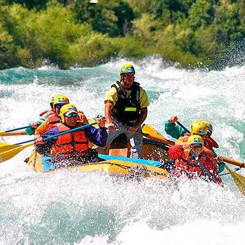
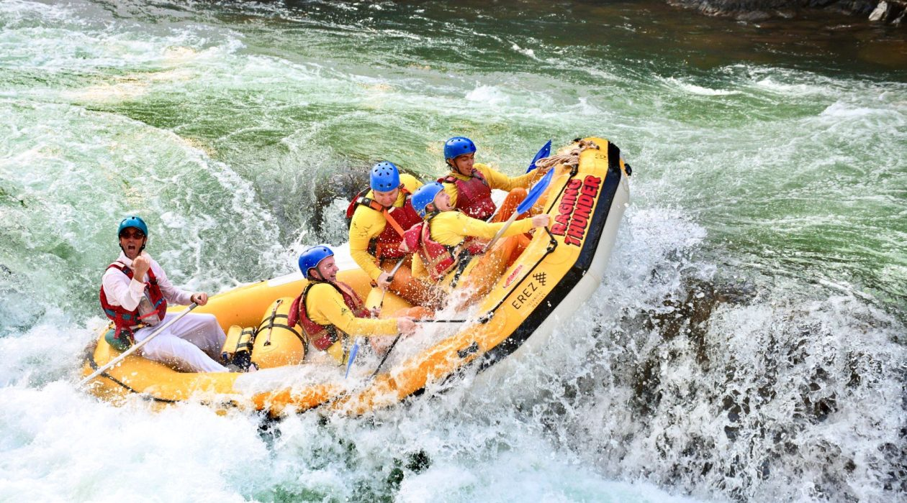
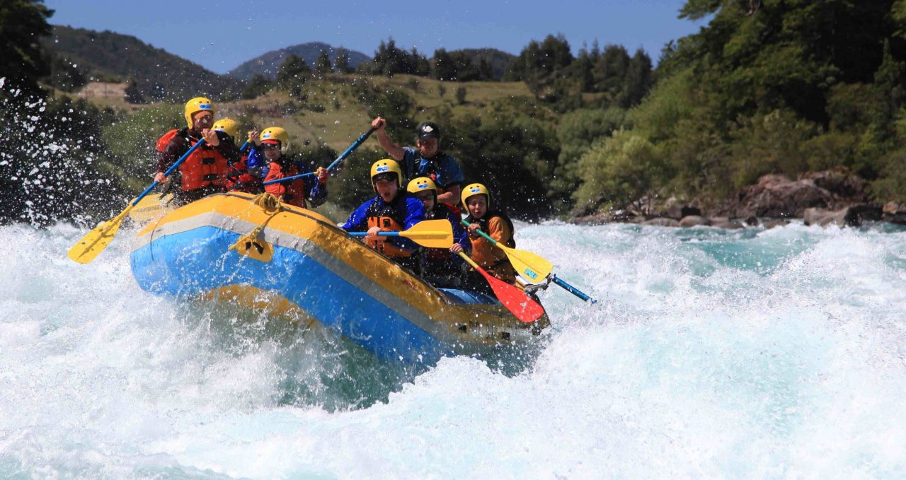
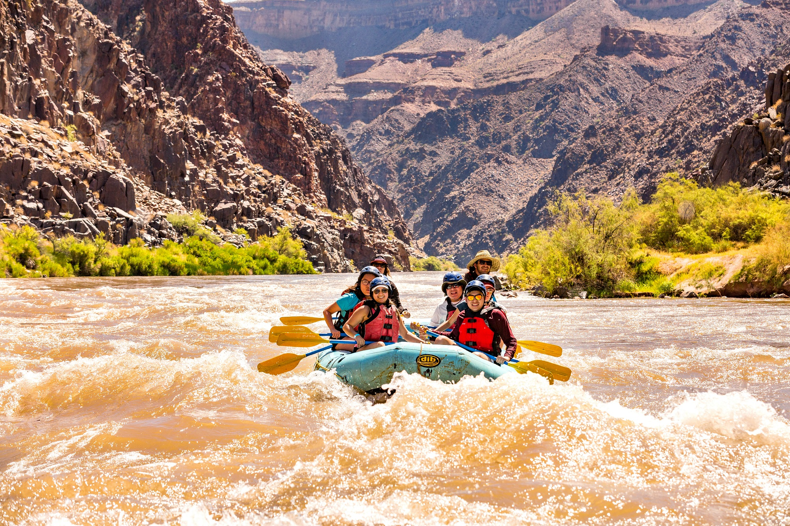

Ready for an Adventure?
Our adventures promise adrenaline, breathtaking scenery, and unforgettable experiences for adventurers seeking the thrill of the river.
Check out our amazing trips and contact us to book your next adventure!
Bio-Bio River - chile

Dive into the heart of Chilean wilderness on the Bio-Bio River, a remote and pristine waterway that offers some of the best white water rafting in South America. With rapids like "Confluence," "The Miracle Mile," and "Rattlesnake," this multi-day expedition will take you through breathtaking canyons, dense forests, and rugged landscapes. Along the way, camp under the stars, hike to hidden waterfalls, and immerse yourself in the beauty of this untouched wilderness.
Tully River, Queensland - Australia

Discover the thrill of white water rafting in the heart of the Australian rainforest on the Tully River. With its crystal-clear waters, lush vegetation, and exciting rapids, the Tully offers an unforgettable adventure for rafters of all skill levels. From gentle stretches perfect for beginners to adrenaline-pumping Grade 4 rapids that will test even the most experienced paddlers, this is an adventure not to be missed.
Futaleufú River - Chile

Prepare to be awed by the raw power and beauty of the Futaleufú River in Chilean Patagonia. Known as one of the most pristine and challenging rafting destinations in the world, the Futaleufú offers adrenaline-pumping rapids set against a backdrop of snow-capped peaks, lush forests, and turquoise waters. With rapids like "Throne Room" and "Terminator," this is an adventure that will push your limits and leave you speechless.
The Grand Canyon, Arizona - USA

Embark on a thrilling journey through the heart of one of the world's most iconic natural wonders. The Grand Canyon offers an unforgettable white water rafting experience, with rapids ranging from exhilarating to awe-inspiring. As you navigate the mighty Colorado River, you'll be surrounded by towering cliffs, cascading waterfalls, and stunning desert landscapes. This multi-day adventure is perfect for adventurers seeking both excitement and breathtaking beauty.
| Trip Name | Duration | Difficulty Level | Price |
|---|---|---|---|
| Bio-Bio River - chile | 6 days | Intermediate | GHC5300 |
| Tully River, Queensland - Australia | 5 days | Beginner | GHC2500 |
| Futaleufú River - Chile | 7 days | Advanced | GHC3700 |
| The Grand Canyon, Arizona - USA | 10 days | Advanced | GHC 1700 |